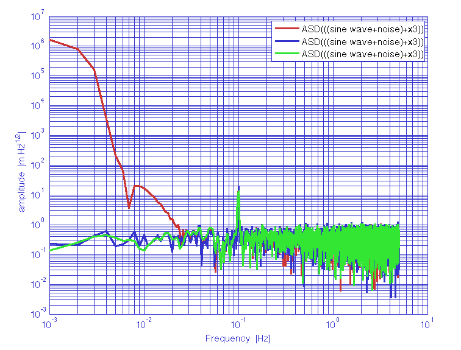

| LTPDA Toolbox™ | contents | |
The LTPDA method ao/psd estimates the power spectral density of time-series
signals, included in the input aos following the Welch's averaged, modified periodogram method [1].
Data are windowed prior to the estimation of the spectrum, by multiplying
it with a spectral window object, and can be detrended by a polinomial of time in order to reduce the impact
of the border discontinuities. The window length is adjustable to shorter lenghts to reduce the spectral
density uncertainties, and the percentage of subsequent window overlap can be adjusted as well. The detrending is
performed on the individual windows. The user can choose the quantity being given in output among
ASD (amplitude spectral density), PSD (power spectral density), AS (amplitude spectrum), and PS (power spectrum).
bs = psd(a1, a2, a3, ..., pl)
bs = psd(as, pl)
bs = as.psd(pl)
a1, a2, a3, ... are ao(s) containing the input time series to be evaluated. bs includes the output object(s) and pl is an optional parameter list.
The parameter list pl includes the following parameters:
The length of the window is set by the value of the parameter 'Nfft', so that the window is actually built using only the key features of the window: the name and, for Kaiser windows, the psll.
As an alternative to setting the number of points 'Nfft' in each window, it's possible to ask for a given number of PSD estimates by setting the 'Navs' parameter, and the algorithm takes care of calculating the correct window length, according to the amount of overlap between subsequent segments.
| If the user doesn't specify the value of a given parameter, the default value is used. |
The algorithm is based in standard MATLAB's tools, as the ones used by pwelch. However, in order to compute the standard deviation of the mean for each frequency bin, the averaging of the different segments is performed using Welford's algorithm [2] which allows to compute mean and variance in one loop.
1. Evaluation of the PSD of a time-series represented by a low frequency sinewave signal, superimposed to white noise. Comparison of the effect of windowing on the estimate of the white noise level and on resolving the signal.
% create two AOs
x1 = ao(plist('waveform','sine wave','f',0.1,'A',1,'nsecs',1000,'fs',10));
x2 = ao(plist('waveform','noise','type','normal','nsecs',1000,'fs',10));
% add both AOs
x = x1 + x2;
% compute the psd changing the 'nfft'
y_lf = psd(x);
y_hf = psd(x,plist('nfft',1000));
% compare
iplot(y_lf, y_hf)

2. Evaluation of the PSD of a time-series represented by a low frequency sinewave signal, superimposed to white noise and to a low frequency linear drift. In the example, the same spectrum is computed with different spectral windows.
% create three AOs
x1 = ao(plist('waveform','sine wave','f',0.1,'A',1,'nsecs',1000,'fs',10,'yunits','m'));
x2 = ao(plist('waveform','noise','type','normal','nsecs',1000,'fs',10,'yunits','m'));
x3 = ao(plist('tsfcn', 't.^2 + t','nsecs',1000,'fs',10,'yunits','m'));
% add them
x = x1 + x2 + x3;
% compute psd with different windows
y_1 = psd(x,plist('scale','ASD','order',1,'win','BH92'));
y_2 = psd(x,plist('scale','ASD','order',2,'win','Hamming'));
y_3 = psd(x,plist('scale','ASD','order',2,'win','Kaiser','psll',200));
% compare
iplot(y_1, y_2, y_3);

| |
Spectral Estimation Methods | Cross-spectral density estimates | |
©LTP Team